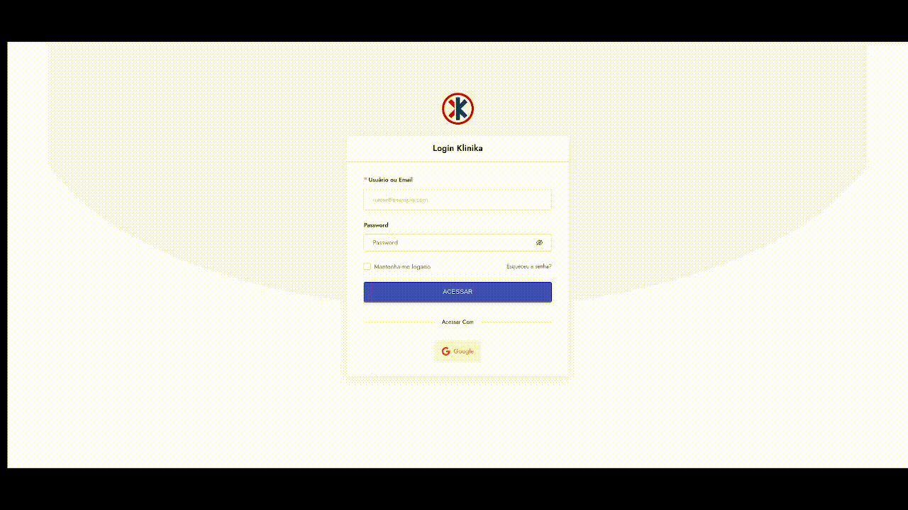

Klinika
Klinika
A aplicação da inteligência artificial no prontuário eletrônico pode trazer uma série de benefícios para a gestão, qualidade dos cuidados e o atendimento de saúde. Aqui estão algumas das formas em que a inteligência artificial pode ser aplicada nesse contexto:
-
Processamento de linguagem natural: A inteligência artificial pode ser usada para processar e compreender a linguagem natural presente nos prontuários eletrônicos. Isso inclui a capacidade de extrair informações relevantes, como diagnósticos, prescrições médicas e histórico de doenças, a partir do texto não estruturado.
-
Classificação e categorização de dados: A inteligência artificial pode ser usada para classificar e categorizar os dados presentes nos prontuários eletrônicos. Isso pode ajudar a organizar as informações de forma mais estruturada, facilitando a pesquisa e o acesso rápido a informações específicas.
-
Análise preditiva e prescritiva: A inteligência artificial pode ser aplicada para analisar os dados dos prontuários eletrônicos e identificar padrões e tendências. Com base nesses insights, é possível realizar previsões sobre a progressão de doenças, riscos de complicações e até mesmo sugerir tratamentos mais eficazes e personalizados para cada paciente.
-
Alertas e notificações: Com base nos dados dos prontuários eletrônicos e em algoritmos de inteligência artificial, é possível criar sistemas de alerta e notificação para profissionais de saúde. Esses alertas podem ser acionados quando há a identificação de interações medicamentosas, alergias, resultados de exames fora dos parâmetros esperados ou outras situações de risco.
-
Suporte à tomada de decisões clínicas: A inteligência artificial pode auxiliar os profissionais de saúde fornecendo informações relevantes e atualizadas no momento da tomada de decisões clínicas. Isso pode incluir sugestões de diagnóstico diferencial, opções de tratamento com base em evidências científicas e informações sobre possíveis efeitos colaterais de medicamentos.
-
Monitoramento remoto e cuidado preditivo: A inteligência artificial pode ser usada para monitorar pacientes de forma remota, analisando dados provenientes de dispositivos vestíveis, sensores ou mesmo informações inseridas manualmente pelos pacientes. Isso permite o acompanhamento contínuo do estado de saúde e a detecção precoce de mudanças ou riscos, possibilitando intervenções precoces e personalizadas.
-
Automatização de tarefas administrativas: A inteligência artificial pode automatizar várias tarefas administrativas, como preenchimento de formulários, agendamento de consultas, pedidos de exames e faturamento. Isso permite que os profissionais de saúde economizem tempo valioso e se concentrem mais no atendimento aos pacientes.
-
Detecção precoce de doenças e previsão de riscos: A inteligência artificial pode analisar dados de saúde de um paciente ao longo do tempo e identificar padrões que podem indicar o desenvolvimento de doenças ou o risco de complicações. Isso pode ajudar os profissionais de saúde a intervir precocemente e implementar medidas preventivas.
Resultados esperados: Melhoria da precisão e qualidade dos registros médicos. Automatização de tarefas administrativas. Suporte à tomada de decisões clínicas. Detecção precoce de doenças e previsão de riscos. Personalização do cuidado de saúde
Habilidades necessárias/preferenciais: Node / Javascript / TypeScript / React / Angular / Machine Learning / Python
Mentores:
Daniel Rocha - Engenheiro de Software - CEO Klinika, daniel@klinika.com.br, Tel: (61) 99216-3354.
Getúlio Bernardo Morato Filho - Médico Pediatra - Docente do Curso de Medicina da ESCS e UniCEUB
Tamanho do projeto: Médio/Grande
Dificuldade: Grande
Necessidade: Projeto remoto e reuniões de 4 horas presenciais semanais na Unb ou Akzo Coworking(Asa Norte)
Resultado obtido
Principais entregas
Neste projeto, alcançamos o desenvolvimento e entrega de duas partes fundamentais: a Klinika Web, responsável pelo prontuário médico, e a Klinika Admin, dedicada à administração da clínica.
Imagens do projeto
Klinika Web
Klinika Admin

Foto da equipe

 analuizargds
analuizargds
 Ana Luiza Rodrigues
Ana Luiza Rodrigues
 rodriguesa208@gmail.com
rodriguesa208@gmail.com
 PedroHenrique2077
Pedro Henrique Rodrigues
PedroHenrique2077
Pedro Henrique RodriguesCarvalho
pedro.rodriguesdecarvalho080@gmail.com
 Izarias
Pedro Augusto Dourado Izarias
pedroaugustoizarias@gmail.com
Izarias
Pedro Augusto Dourado Izarias
pedroaugustoizarias@gmail.com
 SamuelGSouza
/SamuelGSouza
samuelgomes318@gmail.com
SamuelGSouza
/SamuelGSouza
samuelgomes318@gmail.com
Lições aprendidas
Ana Luiza
Quero destacar o grande aprendizado que tive nesses 6 meses. Desde o começo imaginei que a experiência no programa seria de grande proveito, mas supriu ainda mais minhas expectativas. Foi desafiador e inovador e só tenho a agradecer pela oportunidade. Depois de toda essa experiência me sinto preparada para o mercado de trabalho. Aprendi a trabalhar em equipe, a falar com cliente, a superar desafios, a utilizar framework, linguagem e ferramentas novas. Mas o que mais quero destacar é o quanto me identifiquei com essa área, agora sei que quero seguir a carreira de engenheira fé software. Agradeço profundamente a oportunidade.
Pedro Henrique
Durante minha participação neste projeto, adquiri habilidades essenciais de gerenciamento de tempo, aprimorei minha proficiência no desenvolvimento de APIs utilizando Nest.JS e ampliei significativamente meu domínio em React. Aprofundei-me em tecnologias complementares, como o Redux, aprimorando assim minha capacidade de criar aplicações mais robustas e eficientes. Além disso, explorei o fascinante campo da inteligência artificial, aplicando modelos da OpenAI para desenvolver soluções inovadoras que agregam valor ao projeto.
Pedro Izarias
Os maiores aprendizados que tive no programa foram relacionados ao funcionamento de um projeto de software como um todo, como se decide o que será feito, a importância de se ter reuniões regulares e o trabalho em equipe. Pude melhorar também minhas habilidades em programação e entender melhor o funcionamento de uma plataforma web.
Samuel Gomes
Neste projeto, adquiri experiência ao trabalhar com um cliente real e em equipe, aprimorando tanto minhas habilidades técnicas quanto interpessoais. Também aprofundei meus conhecimentos em React, Nest.js, MongoDB, API da OpenAI e sistemas distribuídos, além de ganhar um conhecimento mais profundo sobre as áreas da saúde, clínicas e atendimentos médicos. Além disso, foi gratificante receber o feedback positivo do cliente ao término do projeto, confirmando que conseguimos atender plenamente às suas expectativas.